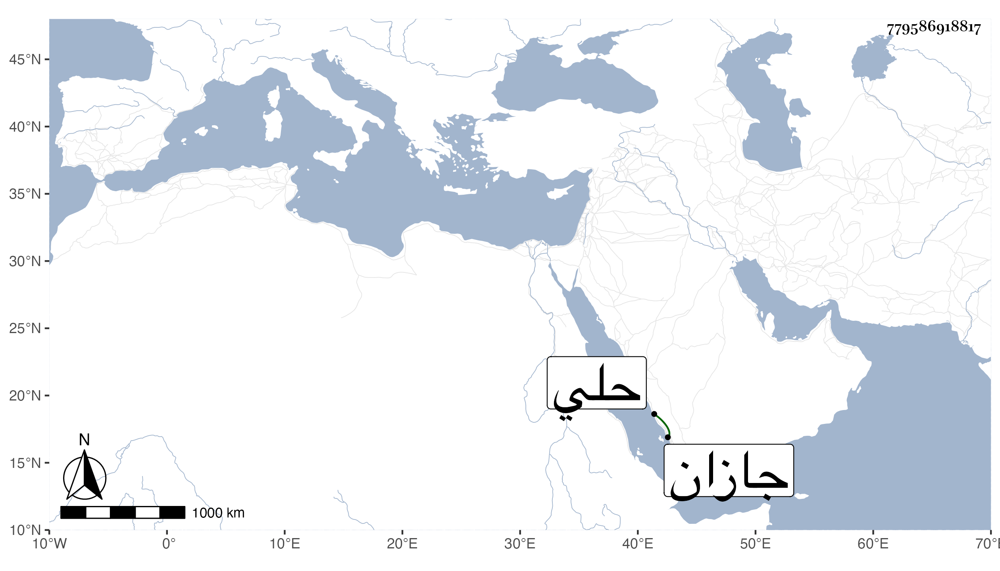

0902Sakhawi.DawLamic.ITO20230111-ara1.EIS1600.779586918817
Biography ID: 779586918817
655
خالد بن أحمد الرهينة صاحب الجب بضم الجيم وتشديد الموحدة واد على يومين من جازان بينها وبين حلي شريف كانت عنده شهامة وشجاعة فتغلب وتصلب ، ومات حريقا في سنة أربع وستين وظهر بذلك آية من آيات الله فإن الجب كان أولا في حكمه فتغلب عليه ابن عمه طير وأخرجه منه فبعد مدة توجه إليه خالد وأحرق القرية فاحترق ابن عمه طير بدون قصد من خالد فقدر الله احتراق خالد وهو حي بل قيل إنه أحاطت به النار وهو على فرسه فلم يجد مجالا فهلك عفا الله عنه .
